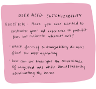
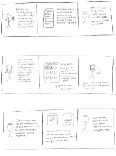

User Need: Customizability
User Need: Options for Reporting
User Need: Accessibility
Comprehending the
consequences of ad bias
Based on the user's feedback, it appears that they value the idea of customizability to reduce algorithmic bias in ads. However, they are skeptical about the effectiveness of some of the proposed solutions,
such as the third idea, which they believe may not be widely utilized without incentives.
Additionally, the user has concerns about the practicality of the second option, which they feel is more suited for shopping filters rather than addressing bias in ads. The user appreciates the concept of flagging when it comes to reporting advertising. In order to get more insights, they also recommend switching the reporting option to
multiple-choice questions. The concept of following up with users to show them gratitude for their
efforts in reporting advertising is also well received by the user. The user like the notion of flagging since it is simple to use and straightforward in terms of
accessibility. Yet, if pop-ups occur frequently, people perceive them as bothersome. The user prefers the first choice over the others when it comes to simplifying adverts since it is simple to use, straightforward, and has a great report sign. With the second choice,
they worry that they might inadvertently tap three times, and with the third option, they question if shaking is intuitive and might be done inadvertently.